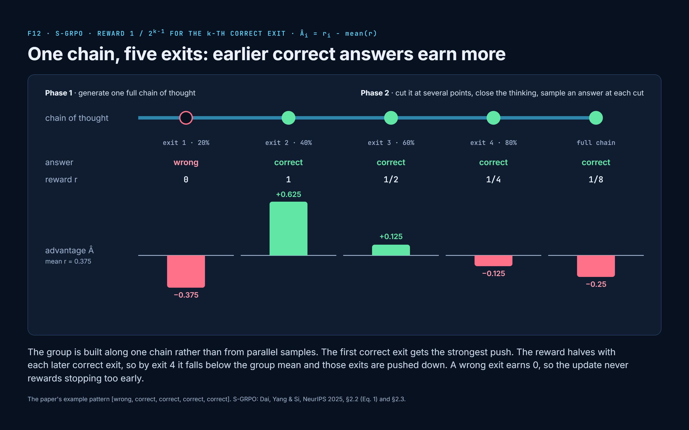

#N, to jump to slide NS-GRPO
Serial-Group Decaying-Reward Policy Optimization: rewarding a reasoning model for reaching a correct answer at an earlier point of its chain of thought.
The setup: reasoning models write a chain of thought (CoT) before their final answer, and longer CoT often improves accuracy.
The problem: models also overthink — they keep reasoning after an intermediate answer is already correct, which costs tokens and can turn a correct answer into a wrong one. S-GRPO rewards earlier correct exits; in the paper's evaluated settings this shortened sequences by 40.4–61.1% while improving accuracy by 0.72–3.92 points.
Acronyms in this deck. S-GRPO Serial-Group Decaying-Reward Policy Optimization (Dai, Yang & Si, 2025) · GRPO Group Relative Policy Optimization (Shao et al., 2024) · DAPO Decoupled Clip and Dynamic sAmpling Policy Optimization (Yu et al., 2025) · CoT chain of thought · RL reinforcement learning. Full references: last slide.
Dai, Yang & Si · NeurIPS 2025 · arXiv:2505.07686 · builds directly on GRPO — see the GRPO deck first
Reasoning models overthink
Allowing a model to reason longer before answering often improves accuracy, so long chains of thought became standard for reasoning models.
Why outcome-reward RL does not fix this: GRPO with a 0/1 verifier scores only the final answer:
- Final answer correct → reward 1
- Final answer wrong → reward 0
Nothing in that reward distinguishes a correct answer reached after 200 tokens from one reached after 2,000, so training has no reason to stop earlier.
schematic: the correct answer appears early, but generation continues
GRPO samples a parallel group of full responses
Each response gets a 0/1 reward, and its advantage compares that reward with the group mean:
For our purpose the key fact is that every member of the group is a complete chain of thought; nothing in the reward asks whether a shorter one would have sufficed.
One chain of thought, several exit points: a serial group

Details and the interactive chart
Grading these answers shows how early the reasoning was already sufficient. (Analogy: asking a student "pencils down — what is your answer now?" at several points of one solution.)
An answer is forced by inserting a short instruction followed by the end-of-thinking marker </think> at the exit position; the model then writes its answer immediately.
one chain of thought, answered at several exit positions
A two-phase rollout: think once, then exit early
Phase 1 · full thought rollout
Generate one complete chain of thought. Then choose $m$ exit positions along it, uniformly at random, so the model sees exits at many different depths.
Phase 2 · early-exit rollout
Truncate the chain at each exit position, append the answer inducer below, and let the model generate an answer from what it has reasoned so far:
</think>
Details
The full-length chain is always a member of the group, so long reasoning remains available when it is needed. The paper presents S-GRPO as well suited to the final stage of post-training, applied to models that already reason well (DeepSeek-R1-Distill-Qwen and Qwen3 models in its experiments).
S-GRPO §2.1 (serial-group generation, answer inducer, over-sampling for filtering) and §3 (models).
The four ingredients of S-GRPO
| Idea | What it means in this deck |
|---|---|
| Rule-based verifier | Each forced answer is checked by a rule, such as a match against the reference answer — not by a learned reward model. The outcome is correct or wrong. |
| Decaying reward | Correct answers earn 1, ½, ¼, ⅛, … in order of their exit positions: the earlier a correct exit, the larger its reward. Wrong answers earn 0. |
| Running count N right | Walk the exits from earliest to latest and count the correct answers so far. The $k$-th correct answer earns $1/2^{k-1}$. The order of the correct exits, not their absolute position, sets the reward. |
| Mean-centered advantage | Each answer's advantage is its reward minus the group's mean reward: positive means "make this exit more likely", negative "less likely". Unlike GRPO, S-GRPO does not divide by the standard deviation (for training stability). |
The decaying reward, live
One chain of thought with 5 exits, from earliest to the full chain. Walking earliest → latest, the 1st correct answer earns 1.0, the next correct one ½, then ¼ and ⅛; wrong answers earn 0.
Click an exit to flip it between correct and wrong and watch the rewards and advantages update.
The earliest correct exit receives the largest reward and the largest positive advantage, so the update makes exiting there more likely. Wrong exits earn 0, so an early exit is reinforced only when it is correct: correctness first, brevity second.
GRPO's update with a new group and a new reward
Walking exits earliest→latest, let $N_{\text{right}}$ be the running count of correct answers:
$$ r^i = \begin{cases}\dfrac{1}{2^{\,N_{\text{right}}-1}} & \text{if answer } i \text{ is correct}\\[4pt] 0 & \text{otherwise}\end{cases}, \qquad \hat A_i = r_i - \operatorname{mean}(r) $$S-GRPO drops GRPO's division by the standard deviation.
One advantage per answer
Each exit's advantage is broadcast to all tokens of its answer, as in GRPO.
Same clipped objective
PPO-style ratio clipping keeps each update close to the sampling policy, so training stays stable.
Only two things change
Same verifier and same update rule as GRPO. New: where the group comes from (exits along one chain) and how it is scored (decaying reward).
S-GRPO §2.2 (Decaying Reward Strategy, Eq. 1) and §2.3 (advantage without the standard deviation).
S-GRPO in five steps
- Generate one full chain of thought and choose several exit positions along it uniformly at random.
- At each exit, insert the answer inducer ("Time is limited, stop thinking and start answering." +
</think>) and generate an answer. - Check each answer with the verifier. Walking earliest → latest, give the 1st correct answer reward 1, the next correct one ½, then ¼, …; wrong answers get 0.
- Compute advantages: each answer's reward minus the group's mean reward.
- Update the policy toward high-advantage exits with the clipped objective, and repeat.
Details
Shorter reasoning, and slightly higher accuracy

Details
Sequence length
Across the evaluated model/benchmark settings, average sequence length falls by roughly half; the bar shows the midpoint of the reported range.
Accuracy change
absolute accuracy points across the evaluated settings — shorter and slightly more accurate, rather than a trade-off.
Five benchmarks: GSM8K, AIME 2024, AMC 2023, MATH-500 and GPQA Diamond; four models (DeepSeek-R1-Distill-Qwen-7B/14B, Qwen3-8B/14B). These are overall ranges, not per-benchmark values.
Ranges from the NeurIPS 2025 proceedings version of Dai, Yang & Si, S-GRPO (the arXiv version reports 35.4–61.1% and +0.72–6.08 points).
The shape of the reward does the work
Decaying reward for correct exits
Because the earliest correct exit earns the most, training pushes hardest toward answering as soon as the reasoning suffices — a preference that a 0/1 final-answer reward cannot express.
Zero reward for wrong exits
A wrong early answer earns nothing, so the model is never rewarded for stopping before its reasoning is sufficient. Shortening happens only where an earlier exit was already correct.
Details
Because the full-length chain stays in every group, the model keeps practicing long reasoning: S-GRPO removes redundant reasoning without removing the ability to reason at length.
When to use it
| GRPO | S-GRPO | |
|---|---|---|
| Group | $G$ independent full responses (parallel group) | exits along one chain of thought (serial group) |
| Reward | 0/1 on the final answer | decaying reward for correct exits (1, ½, ¼, …), 0 if wrong |
| Optimizes | correctness | correctness, then earliness |
| Typical use | training a model to reason | a final RL stage that shortens an existing reasoning model |
Can you explain S-GRPO in your own words?
Question 1: How does S-GRPO build its group?
Question 2: Which correct answer receives the largest reward?
Question 3: Why do wrong early exits get reward 0 rather than a small positive reward?
S-GRPO rewards knowing when to stop
Same verifier and same update as GRPO — but by grading exits along one chain of thought with a decaying reward, S-GRPO turns "be correct" into "be correct as early as possible".
What the paper reports
40.4–61.1% shorter sequences and absolute accuracy gains of 0.72–3.92 points across its evaluated settings (NeurIPS 2025 version).
The one idea
Correct exits earn 1, ½, ¼, ⅛, … in order; wrong exits earn 0. The update pushes hardest toward the earliest correct exit.
Details
Next → run sgrpo_early_exit.ipynb (about 15 min). This is the last deck; Appendix D of 02_failure_lab.ipynb places later methods such as Dr. GRPO and GSPO on the same map, and 04_method_testbed.ipynb runs them side by side.
Go deeper → the paper · the hands-on notebook · GRPO · DAPO · DisCO
Sources cited in this deck
- M. Dai, C. Yang and Q. Si. S-GRPO: Early exit via reinforcement learning in reasoning models. NeurIPS, 2025. Also arXiv:2505.07686. (S-GRPO; section numbers in this deck)
- Z. Shao et al. DeepSeekMath: Pushing the limits of mathematical reasoning in open language models. arXiv:2402.03300, 2024. (GRPO)
- Q. Yu et al. DAPO: An open-source LLM reinforcement learning system at scale. NeurIPS, 2025. (over-sampling and filtering)
- J. Schulman et al. Proximal policy optimization algorithms. arXiv:1707.06347, 2017. (clipped objective)